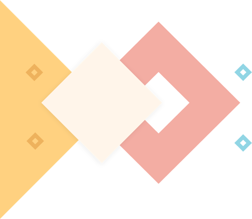
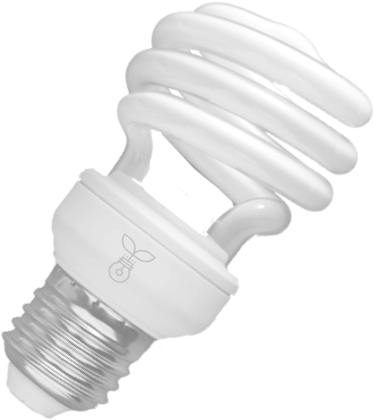
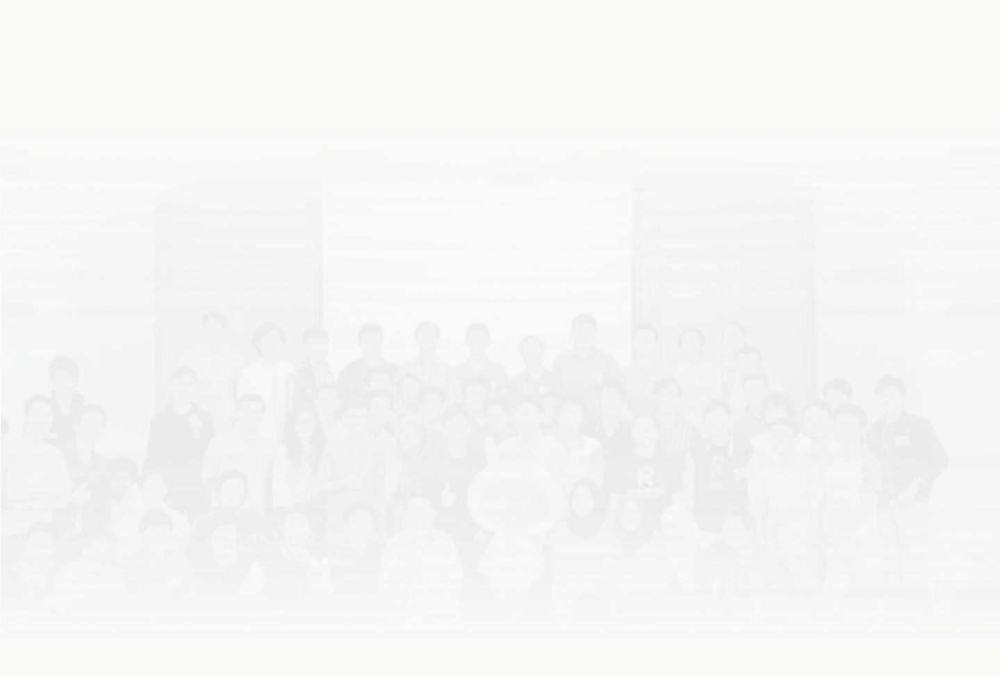

#cultivatingtalents
intechnology

/ CULTIVATING TALENTS IN TECHNOLOGY /
Ristek Fasilkom UI is an independent organization operated by students
of Faculty of Computer Science Universitas Indonesia (Fasilkom UI)
which is aimed to facilitate student’s skills and interests in the field of science technology.

/ MISSION /
Ristek Fasilkom UI facilitates student's skills and interests by creating eight different Special
Interest Group where they can join and learn. We build a collaborative environment between members,
alumnus, elements, and society. All Ristek Fasilkom UI's activities are organized to improve knowledge
technology. Here, we also build a product development culture by providing qualified and structured
training in purpose to create skillful members.
MISSION
ACTIVITIES